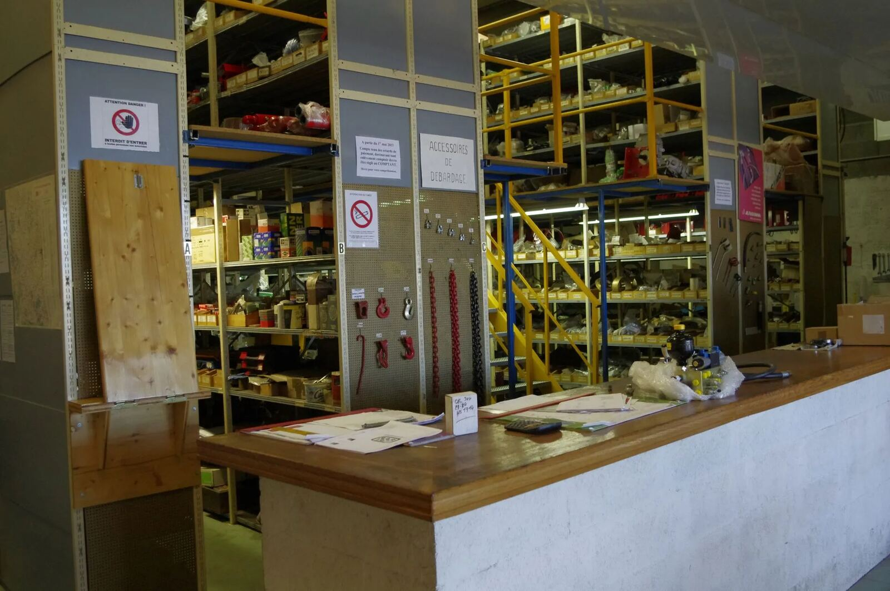
1
Un SAV réactif grâce au stock
Pièces détachées disponibles en permanence dans notre magasin dédié, et machines neuves en stock pour un remplacement immédiat en cas d'urgence.
Noirétable · Loire · depuis 1981
Distributeur des constructeurs leaders du secteur — de l'exploitation forestière au sciage de grumes, avec un SAV et une livraison partout en France.
Nos constructeurs-leaders
Depuis 1981, nous sélectionnons pour vous les meilleurs constructeurs de matériel forestier, gage de qualité et d'innovation.
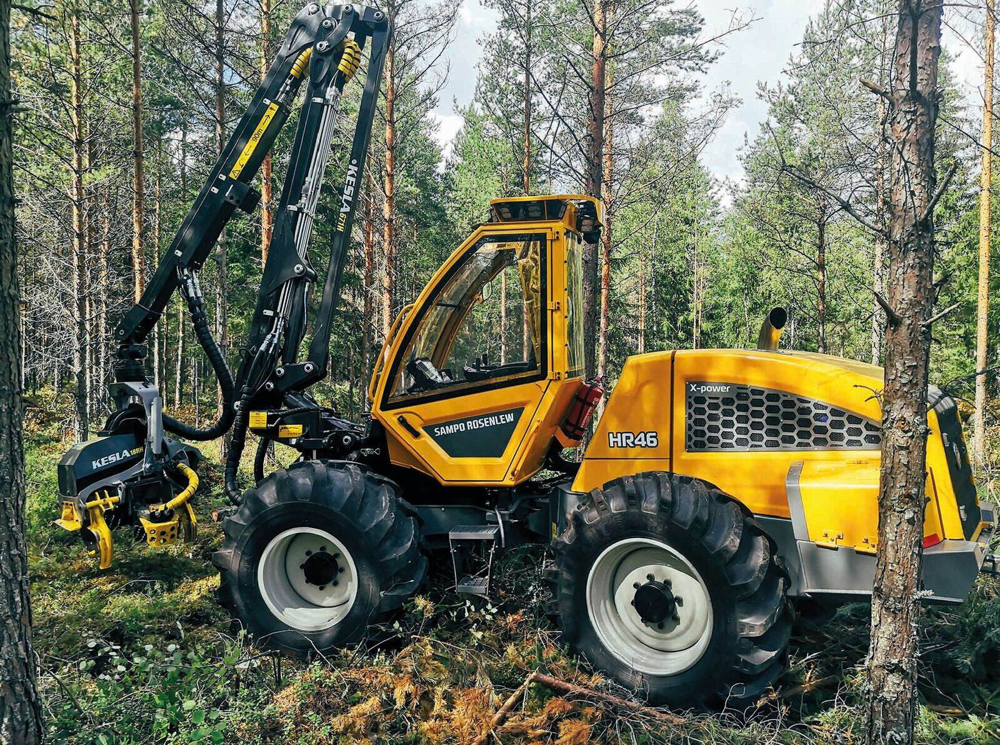
Porteurs et abatteuses Sampo Rosenlew, remorques-grues Kesla et Farma, treuils Königswieser.
voir les matériels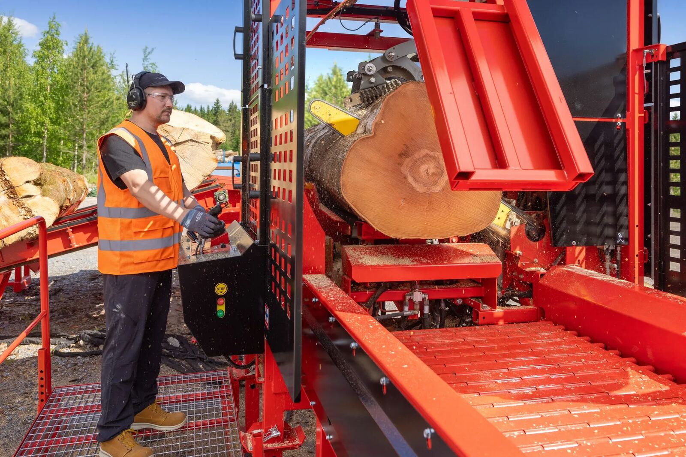
Coupeurs-fendeurs Hakki Pilke, fendeuses et scies OMA, tables d'alimentation.
voir les matériels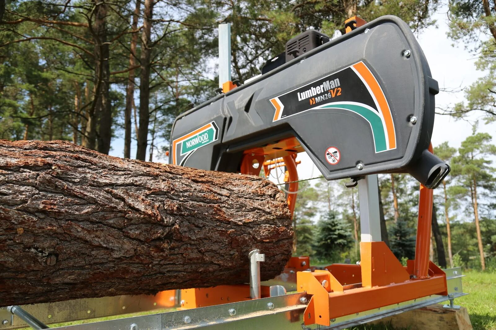
Scieries Wood-Mizer, Norwood, Frontier et Zenz — mobiles ou fixes.
voir les matérielsCentre d'affûtage — toutes marques de lames
Notre atelier de Noirétable affûte toutes les marques de lames, pour les professionnels comme pour les particuliers. Préparez votre demande ici : nous vous rappelons avec un devis adapté.
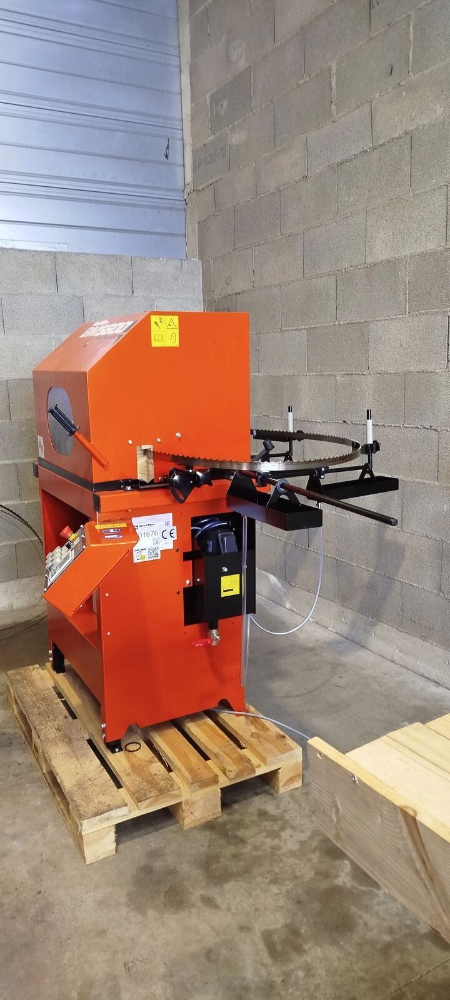
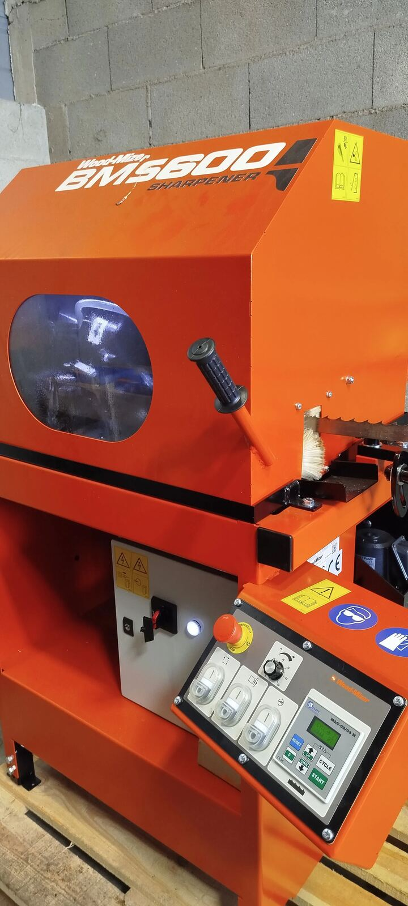
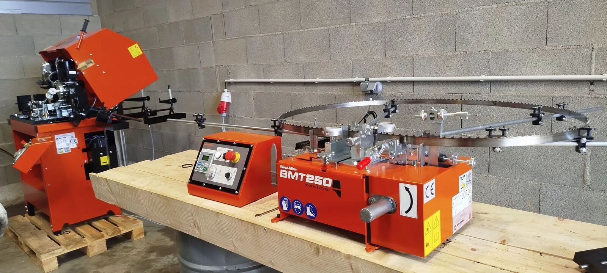
Les matériels de nos constructeurs-leaders
Que vous soyez un professionnel à la recherche d'une gamme professionnelle ou un particulier souhaitant investir dans un équipement performant.
Dépannage et SAV partout en France
Un service après-vente doté de techniciens experts qui se déplacent dans toute la France pour garantir la continuité de votre activité.

Pièces détachées disponibles en permanence dans notre magasin dédié, et machines neuves en stock pour un remplacement immédiat en cas d'urgence.
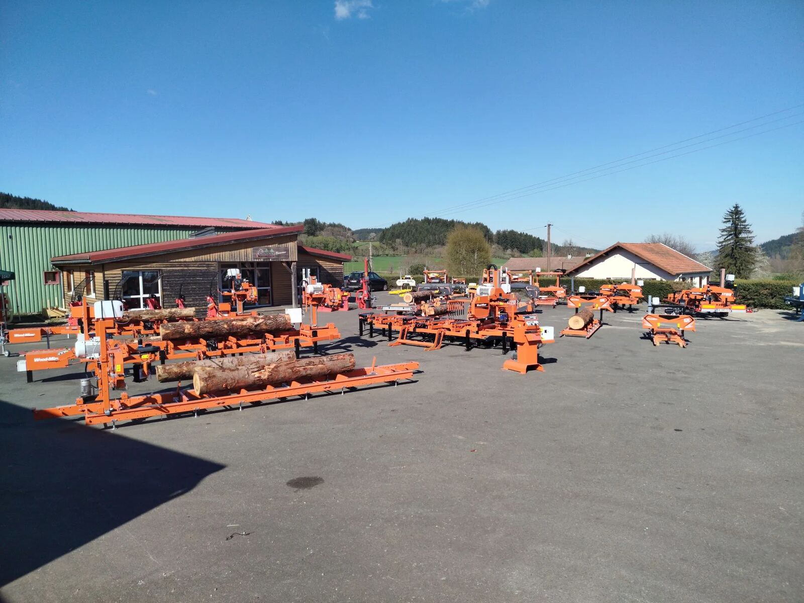
Nos équipes se déplacent pour diagnostiquer et réparer vos équipements sur site, avec des solutions adaptées à vos besoins.
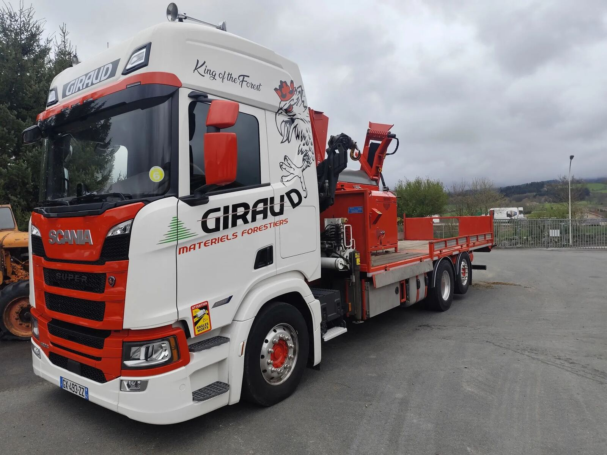
Transport et livraison de vos machines dans toute la France, installation clé en main par nos techniciens.
À découvrir sur notre parc actuellement
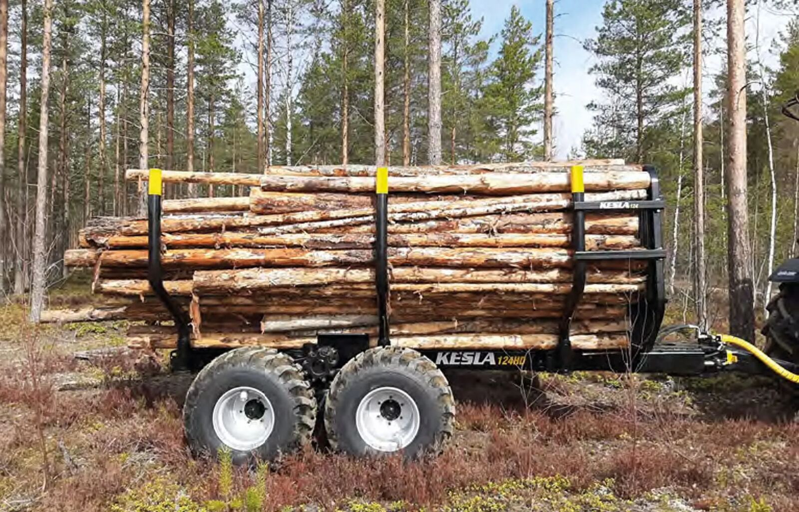
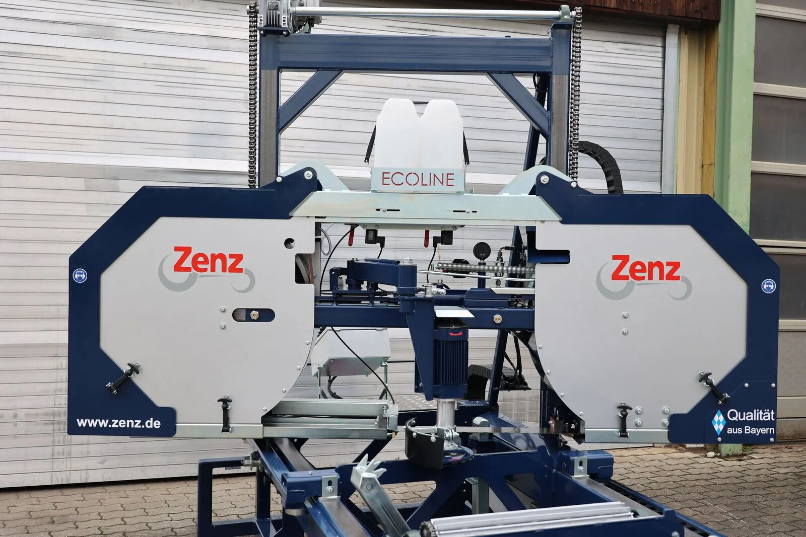
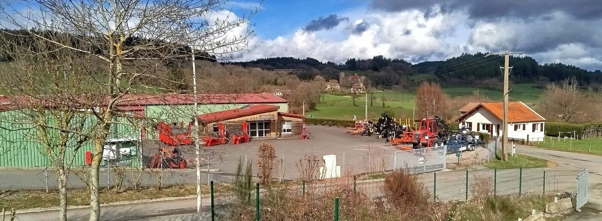
Depuis plus de 40 ans
Ets Giraud propose des matériels forestiers des meilleurs constructeurs du marché, à la fois performants, innovants et éco-responsables, et répond de manière adaptée aux besoins des professionnels comme des particuliers.
Contact